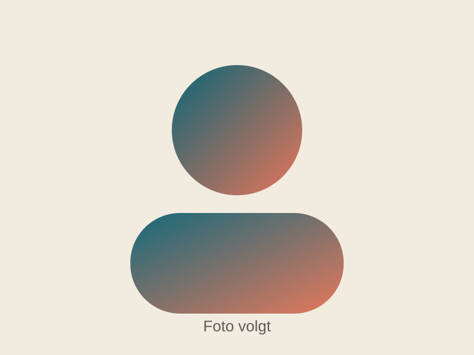

Bestuur KNAS
Het bestuur bestaat uit bevlogen vrijwilligers. Onderstaand overzicht is gebaseerd op de actuele bestuurspagina. Voor officiële updates blijft de originele bron leidend.
Mailadressen
- voorzitter@knas.nl
- secretaris@knas.nl
- penningmeester@knas.nl
Bestuursleden
Mapstructuur voor foto's
| Persoon | Map | Bestandsnaam advies |
|---|---|---|
| Roeland Reesinck | assets/images/board/roeland-reesinck | profile.jpg |
| Remco Middelveld | assets/images/board/remco-middelveld | profile.jpg |
| Patrice Masson | assets/images/board/patrice-masson | profile.jpg |
| Jan-Willem Lammers | assets/images/board/jan-willem-lammers | profile.jpg |
| Claudia Bokel | assets/images/board/claudia-bokel | profile.jpg |